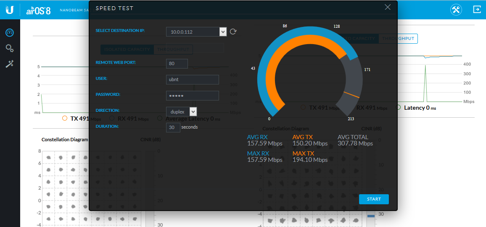
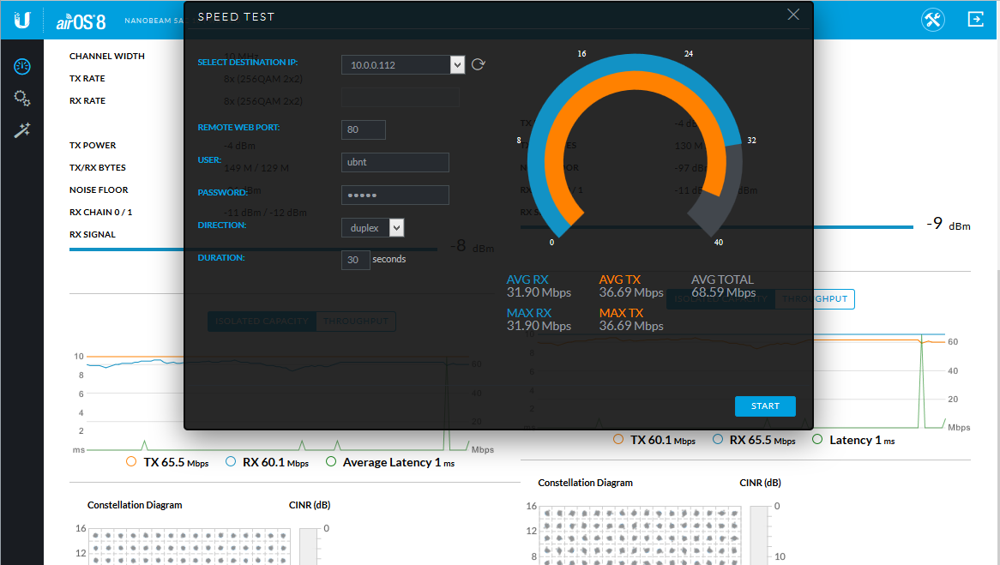
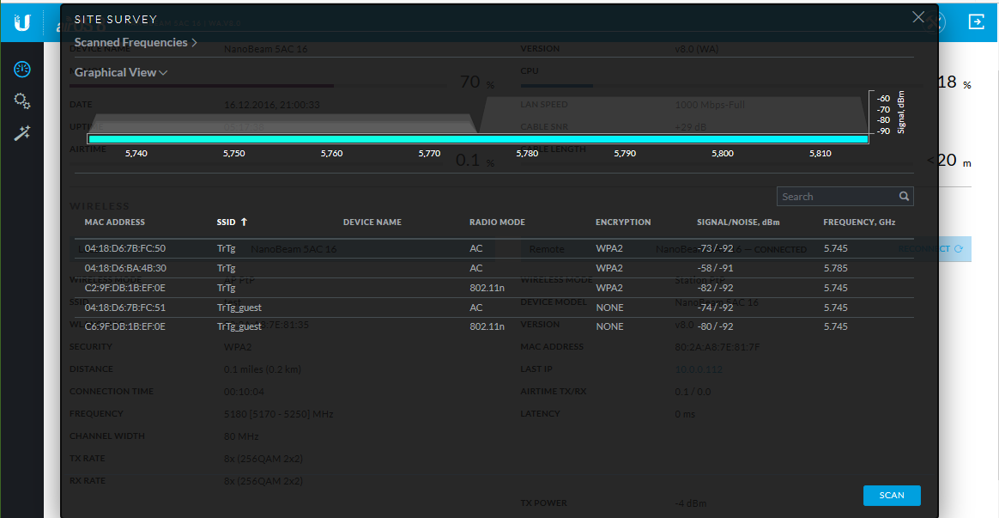
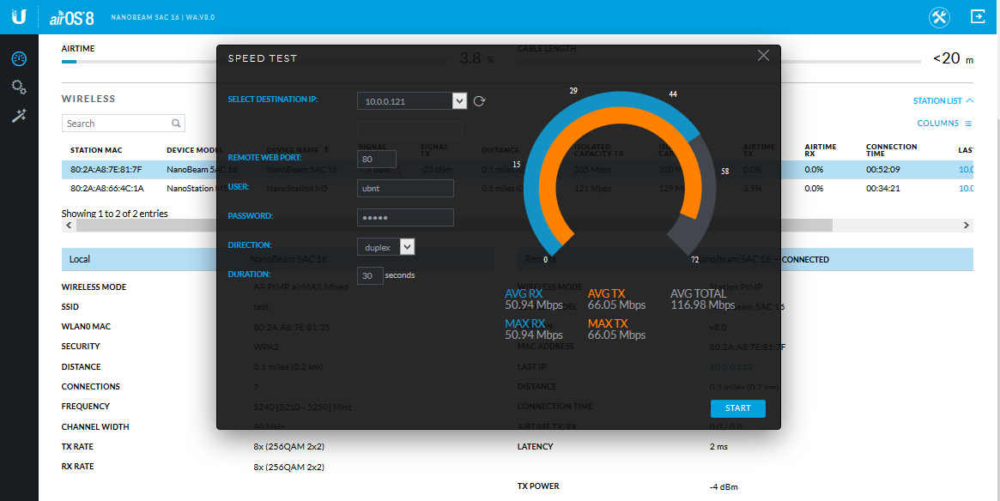

Инструкция по настройке оборудования Ubiquiti линейки AirMax AC
Описание
Инструкция по настройке оборудования Ubiquiti продуктовой линейки AirMax AC
Инструкция для подключения предшествующей ей линейки airMax, здесь
Компания Ubiquiti Networks – один из разработчиков и производителей беспроводного оборудования, предназначенного для провайдеров беспроводных услуг Интернета, бизнеса и частных пользователей. Наиболее современная линейка продуктов – AirMax AC включает в себя решения для создания беспроводных мостов, базовых станций, а также «клиентское» оборудование, поддерживающее новейший стандарт 802.11 ac.
До недавнего времени устройства серии AirMax AC могли работать только совместно с таким же оборудованием. 16 декабря 2016 года вышел официальный релиз прошивки с операционной системой AirOS 8 для устройств AirMax AC и AirOS 6 для устройств AirMax, что дало возможность построения «смешанных» сетей. В данной инструкции будут рассмотрены настройки «прозрачного» беспроводного моста точка-точка, «чистой» сети точка – многоточка AirMax AC и «смешанной» сети. При создании инструкции использовались устройства Nanobeam NBE-5AC-16 и Nanostation 5. Поскольку все продукты Ubiquiti AirMax AC/ AirMax работают под управлением той же операционной системы, настройка любых других устройств данных линеек будет полностью аналогична.
Начальное подключение к устройству и обновление прошивки.
Первоначальное подключение к устройству уже мыло много раз рассмотрено в обзорах и инструкциях. IP адрес устройства с «заводскими» настройками 192.168.1.20, имя пользователя и пароль ubnt/ubnt. Доступ к настройкам осуществляется через любой обозреватель Интернета (IE, Firefox, Chrome, Safari). При первом открытии интерфейса система предложит указать страну использования и подтвердить согласие с условиями лицензионного соглашения. Выбор страны важен, поскольку от этого зависит доступность определенных частотных диапазонов и мощности устройства. Если мощность далее можно будет «разблокировать» в настройках, то частоты – нет без сброса настроек и выбора другой страны. Следует отметить, что страны «North America» и «Puerto Rico» будут заблокированы для выбора для устройств «общемирового» типа, выпущенных после 1 января 2017 года и останутся как единственный выбор для устройств «североамериканского» типа (которые собственно и не должны поставляться на любые рынки за пределами США).
Рисунок 1. Экран настройки при первом подключении к устройству.
Следующий крайне важный шаг – обновление прошивки, поскольку это позволяет использовать новые функции операционной системы AirOS.
Рисунок 2. «Заводская» версия прошивки.
Для обновления прошивки необходимо скачать на компьютер с сайта производителя (http://www.ubnt.com/download/) файл, соответствующий нужному устройству. Тип нужной прошивки можно проверить на главном экране интерфейса или на закладке «System». Для Nanobeam NBE-5AC-16 требуется, например, прошивка WA типа. После этого на закладке «System» в пункте «Upload Firmware» указать путь к скачанному файлу. После загрузки файла на устройство нужно запустить процесс обновления кнопкой «Update». После перезагрузки прошивка будет обновлена. Естественно, обновление прошивки необходимо на всех устройствах сети – и точках доступа и клиентах.
Рисунок 3. Загрузка файла обновления на устройство.
Рисунок 4. Прошивка обновлена.
Сценарий 1. Настройка «прозрачного» беспроводного моста точка-точка.
Беспроводной мост – одно из наиболее востребованных применений устройств AirMax AC. Фактически, в этом сценарии два устройства заменяют физический Ethernet или оптический кабель. В режиме моста одно из устройств работает как точка доступа, второе как клиент. Дальность действия зависит от модели радиомодуля и от ряда «внешних» условий. Nanobeam NBE-5AC-16 могут использоваться на расстоянии до 1-2 километров. Более мощные устройства Powerbeam или Rocket с параболическими антеннами могут обеспечивать связь на расстояниях в десятки километров.
Для выбора нужного режима работы, в закладке Wireless» нужно выбрать «Access Point PtP». Далее, указывается имя сети, выбирается ширина канала, мощность радио модуля и тип шифрования с паролем. Ширина канала оказывает прямое влияние на скорость передачи данных. Чем она выше, тем выше возможная скорость в канале, но меньше дальность связи. Кроме того, использование слишком широких каналом во многих случаях невозможно из за отсутствия доступных частот. Кроме того, чем шире канал, тем выше влияние помех.
Доступные каналы включают 80, 60, 50, 40, 30, 20 и 10 МГц. Важно помнить, что при «автоматической» настройке клиентского устройства, оно может подключаться только к точке доступа с каналами 20/40/80 МГц. Если указана другая ширина канала, на клиентском устройстве необходимо указывать соответствующую величину вручную.
Рисунок 5. Выбор режима работы точки доступа.
Рисунок 6. Настройка параметров беспроводной связи.
Рисунок 7. Выбор ширины канала.
Следующая задача – настроить сетевые параметры. Режим работы сети «Bridge». Для выбора IP адреса для управления самим устройством можно указать автоматическое присвоение адреса по DHCP или статический адрес. Если выбран режим DHCP, важно также указать «отказоустойчивый» IP адрес для конфигурации при отказе DHCP сервера.
Рисунок 8. Настройка сетевых параметров.
Для управления устройствами AirMax AC используется WEB интерфейс или подключение по протоколу SSH. Если устройство находится в «реальной» сети, порты этих сервисов желательно сменить на нестандартные. Включение режима «Device Discovery» позволяет выполнять поиск устройств Ubiquiti в сети. Это может быть удобным при значительном количестве таких устройств, но для единственного моста не требуется.
Рисунок 9. Настройка сервисов и портов управления.
Закладка «System» позволяет изменить параметры администратора. Желательно сменить имя пользователя «по умолчанию». Также на этой закладке производится обновление прошивки, резервное копирование конфигурации, перезагрузка и сброс устройства.
Рисунок 10. Обслуживание устройства.
На следующем этапе настраивается клиентское устройство. В качестве беспроводного режима указывается «Station PtP», остальные параметры соответственно настройкам точки доступа. Если на точке доступа ширина канала установлена как 20, 40 или 80 МГц, можно установить автоматическую настройку. В остальных случаях - указать ширину канала вручную.
Рисунок 11. Беспроводные настройки клиентского устройства.
При выборе идентификатора сети (SSID), его можно указать вручную или выбрать из списка доступных сетей.
Рисунок 12. Выбор доступной беспроводной сети из списка.
Если все настройки были сделаны правильно, через несколько секунд точка доступа установит связь с клиентским устройством. На экране суммарной информации и точки доступа и станции будет отображаться информация об устройствах, параметрах настройки и качестве беспроводной связи.
Рисунок 13. Экран суммарной информации (Dashboard).

В нижней части экрана отображаются данные о текущей скорости соединения. Так называемая «диаграмма сигнального созвездия» (Constellation Diagram) позволяет наглядно представить текущее качество соединения. Радиосигнал отображается в виде точечной диаграммы. Количество ячеек зависит от используемой модуляции сигнала – «TX Data Rate» в настройках беспроводной сети (может быть выбрано автоматически или вручную). Доступные модуляции 1x (BPSK), 2x (QPSK), 4x (16QAM), 6x (64QAM) и 8x (256QAM). Чем более плотно точки расположены к центру ячейки, тем лучше качество сигнала. При высоких помехах точки расположены хаотично и далеко от центра ячейки. В этом случае возрастает число ошибок при передаче данных. Если модуляция выбирается автоматически, система выбирает более низкую, что уменьшает число ошибок. Диаграмма на рисунке 14 отображает состояние системы без точного выравнивания и с неоптимальным выбором частоты. Поэтому, диаграмма «размыта» и скорость соединения не достигает максимума.
Рисунок 14. Экран суммарной информации (Dashboard). Диаграммы скорости соединения и «сигнального созвездия» (Constellation Diagram) .
В состав операционной системы AirOS 8 включен мощный инструмент AirMagic, позволяющий быстро найти источник помех и оптимизировать использование частотного диапазона. Он использует сканер частот AirView (доступен не для всех типов устройств) и позволяет точке доступа в течение продолжительной работы и в режиме реального времени, собирать данные о помехах на частотных каналах, а также получать данные от всех подключенных к ней станций. На частотной диаграмме цветом показан уровень помех. Белый прямоугольник показывает выбранный для использования частотный канал. Перемещая прямоугольник выбора можно установить его в наиболее свободную от помех область спектра. После применения настроек точка доступа будет работать на новой частоте.
Рисунок 15. Инструмент «AirMagic».
Рисунок 16. Выбор частоты в инструменте «AirMagic».
После перевода оборудования на более свободную частоту и точного выравнивания устройств качество связи достигло максимума для текущих условий.
Рисунок 17. Экран суммарной информации (Dashboard после перехода на новую частоту и выравнивания .
Рисунок 18. Экран суммарной информации (Dashboard). Диаграммы скорости соединения и «сигнального созвездия» (Constellation Diagram) для модуляции 8x (256QAM) 2x2.
После настройки была определена скорость соединения при помощи встроенного инструмента «Speed Test». Измерялась скорость передачи данных в радиоканале между точкой доступа и станцией. Условия работы моста следующие:
· Опыт производился в помещении. Материал стен – металло-пластиковые сэндвич панели.
· Расстояние между точкой доступа и станцией 2 метра. Мощность радиомодулей уменьшена до предела (-4 Дб).
· Режим работы устройств – прозрачный мост.
· В выбранном диапазоне частот нет конкурирующих сетей.
Результаты тестирования могут приниматься только «как есть» для конкретных условий теста. Нет никакой гарантии для получения таких же результатов в других условиях работы моста.
|
Модуляция |
Достигнутая скорость передачи данных |
|
8x (256QAM) 2x2 |
419.13 Mbps |
|
6x (64QAM) 2x2 |
307.78 Mbps |
|
4x (16QAM) 2x2 |
267.92 Mbps |
|
2x (QPSK) 2x2 |
70.35 Mbps |
|
1x (BPSK) 2x2 |
22.92 Mbps |
Рисунок 19. Тест скорости для модуляции 8x (256QAM) 2x2.
Рисунок 20. Диаграммы скорости соединения и «сигнального созвездия» (Constellation Diagram) для модуляции 6x (64QAM) 2x2.
Рисунок 21. Тест скорости для модуляции 6x (64QAM) 2x2.

Рисунок 22. Диаграммы скорости соединения и «сигнального созвездия» (Constellation Diagram) для модуляции 4x (16QAM) 2x2.
Рисунок 23. Тест скорости для модуляции 4x (16QAM) 2x2.

Рисунок 24. Диаграммы скорости соединения и «сигнального созвездия» (Constellation Diagram) для модуляции 2x (QPSK) 2x2.
Рисунок 25. Тест скорости для модуляции 2x (QPSK) 2x2.
Рисунок 26. Диаграммы скорости соединения и «сигнального созвездия» (Constellation Diagram) для модуляции 1x (BPSK) 2x2.
Рисунок 27. Тест скорости для модуляции 1x (BPSK) 2x2.
Следующий тест касался определения скорости соединения при снижении ширины канала на одинаковой модуляции 8x (256QAM) 2x2. Результаты вполне предсказуемые за исключением скачка скорости для канала 40 МГц. Опять же, результаты теста могут приниматься только «как есть» и не гарантируют сходных результатов для любого другого теста.
|
Ширина канала |
Достигнутая скорость передачи данных |
|
80 МГц |
419.13 Mbps |
|
60 МГц |
243.75 Mbps |
|
50 МГц |
194.20 Mbps |
|
40 МГц |
301.43 Mbps |
|
30 МГц |
187.03 Mbps |
|
20 МГц |
136.85 Mbps |
|
10 МГц |
68.59 Mbps |
Рисунок 28. Диаграммы скорости соединения и «сигнального созвездия» (Constellation Diagram) для канала 60 МГц.
Рисунок 29. Тест скорости для канала 60 МГц.
Рисунок 30. Диаграммы скорости соединения и «сигнального созвездия» (Constellation Diagram) для канала 50 МГц.
Рисунок 31. Тест скорости для канала 50 МГц.
Рисунок 32. Диаграммы скорости соединения и «сигнального созвездия» (Constellation Diagram) для канала 40 МГц.
Рисунок 33. Тест скорости для канала 40 МГц.
Рисунок 34. Диаграммы скорости соединения и «сигнального созвездия» (Constellation Diagram) для канала 30 МГц.
Рисунок 35. Тест скорости для канала 30 МГц.
Рисунок 36. Диаграммы скорости соединения и «сигнального созвездия» (Constellation Diagram) для канала 20 МГц.
Рисунок37. Тест скорости для канала 20 МГц.
Рисунок 38. Диаграммы скорости соединения и «сигнального созвездия» (Constellation Diagram) для канала 10 МГц.
Рисунок 39. Тест скорости для канала 10 МГц.

Дополнительные инструменты в составе операционной системы AirOS 8.
В состав операционной системы AirOS включен ряд полезных инструментов, способных облегчить планирование сети и управление беспроводным оборудованием. Первый из этих инструментов – спектральный анализатор airView. Он позволяет определить уровни помех для каждого частотного диапазона. В устройствах серии AirMax AC сканер использует свой отдельный радиомодуль и его работа возможна в фоновом режиме без отключения основного беспроводного канала. В сканере airView имеются 3 основных представления результатов. Представление «Waveform» показывает мощность радиосигналов и помех на каждой частоте. Представление «Waterfall» показывает уровень энергии для каждой частоты с течением времени. Сам уровень показан различным цветом. Наконец, вид «Ambient Noise Level» показывает уровень энергии для каждой частоты за более продолжительное время (минуты и часы – вплоть до сбора данных за последние 24 часа).
Рисунок 40. Спектральный анализатор airView.
Инструмент «Antenna Align Tool» позволяет выполнить более точное ориентирование устройств для получения максимально сильного сигнала. Помимо графического отображения возможно также включить звуковую индикацию.
Рисунок 41. Инструмент «Antenna Align Tool» - максимальное значение сигнала.
Рисунок 42. Инструмент «Antenna Align Tool» - антенна направлена неверно.
Инструмент «Device Discovery» позволяет обнаружить устройства Ubiquiti в L2 сети. Могут быть обнаружены не только AirMax устройства, но и оборудование UniFi и UniFi Video.
Рисунок 43. Обнаружение устройств Ubiquiti в сети.
Инструмент «Site Survey» показывает беспроводные сети в диапазоне частот, поддерживаемых устройством. Этот же инструмент используется при настройке беспроводного интерфейса, когда выполняется поиск доступных сетей (рисунок 12).
Рисунок 44. Беспроводные сети в инструменте «Site Survey».

Сценарий 2. Настройка «прозрачной» беспроводной сети точка-многоточка только для устройств AirMax AC.
Создание беспроводного моста это только один из возможных сценариев применения оборудования Ubiquiti AirMax AC. Также востребованным является создание сетей «провайдерского» типа, в которых к базовым станциям подключаются десятки клиентских устройств. Сначала рассмотрим создание сети, в которой будут работать только устройства AirMax AC.
Настройки точки доступа в целом полностью аналогичны таковым для моста. Однако есть ряд важных отличий. В качестве режима работы необходимо выбрать «Access Point PtMP AirMax AC». Обратите внимание, что в этом режиме максимально возможная ширина канала ограничена 40 МГц. Также в настройках появляется пункт «Client Isolation». Эта настройка позволяет изолировать клиентские устройства. При этом точка доступа допускает только пересылку трафика между клиентским устройством и внешней сетью.
Рисунок 45. Настройки беспроводной сети для точки доступа PtMP AirMax AC.
Клиентское устройство настраивается также, как и для моста. В качестве режима работы надо выбрать «Station PtMP». Устройство в режиме «Station PtP» подключиться к базовой станции не сможет.
Рисунок 46. Настройка клиентского устройства для сети точка-многоточка.
Естественно, что максимально возможная скорость соединения будет меньше, чем для моста за счет ограничения ширины канала.
Рисунок 47. Диаграммы скорости соединения и «сигнального созвездия» (Constellation Diagram) для сети точка-многоточка.
Рисунок 48. Тест скорости для канала 40 МГц в сети точка-многоточка.
Сценарий 3. Настройка смешанной «прозрачной» беспроводной сети точка-многоточка для устройств AirMax AC и AirMax M.
Оборудование AirMax M, поддерживающее стандарт 802.11n используется повсеместно и выпущено миллионными тиражами. Более того, выпуск этих устройств продолжается, и будет продолжаться еще несколько лет. Поэтому, крайне важно обеспечить «обратную совместимость» этих устройств с новой серией AirMax AC. С выходом AirOS 8/AirOS 6 такая совместимость наконец то вышла из фазы бета-тестирования. Теперь базовые станции AirMax AC могут поддерживать клиентское оборудование серии AirMax M, хотя не все новые возможности поддерживаются.
Настройки беспроводной базовой станции для этого варианта сети такие же, что и для предыдущего случая. Единственное отличие – режим работы переключается в «PtMP AirMax Mixed». Настройки клиентских станций AirMax AC не изменяются.
Рисунок 49. Настройки беспроводной сети для точки доступа PtMP AirMax Mixed.
Для того, чтобы устройства AirMax M могли подключаться к базовой станции AirMax AC, на них необходимо установить прошивку версии 6.0 (и выше).
Рисунок 50. Обновление прошивки для устройства AirMax M.
Рисунок 51. Новая прошивка с операционной системой AirOS 6.
Настройки клиентского устройства в принципе те же, что и для станции AirMax AC. Не совсем понятна ситуация, при которой при выборе страны «Россия» для AC устройств доступен канал 40 МГц, а для AirMax M только 30 и ниже. При первом тесте был выбран канал 20 МГц. После сохранения настроек Nanostation успешно подключается к базовой станции.
Рисунок 52. Беспроводные настройки Nanostation M.
Рисунок 53. Подключение к сети.
Рисунок 54. Устройство подключено к базовой станции.
На экране суммарной информации базовой станции можно просмотреть статус для каждой из станций. Видно, что для устройств AirMax M не все функции доступны. В частности, нет диаграммы «сигнального созвездия» (Constellation Diagram). Также, устройства AirMax M не участвуют в построении диаграммы AirMagic, поскольку не имеют отдельного модуля частотного сканера. При этом такие же данные об устройствах AC типа имеются.
Тесты скорости показывают вполне ожидаемый результат.
Рисунок 55. Экран суммарной информации базовой станции с данными об устройстве AirMax M.
Рисунок 56. Экран суммарной информации базовой станции с данными об устройстве AirMax AC.
Рисунок 57. Тест скорости в «смешанной» сети для устройства AirMax AC.
Рисунок 58. Тест скорости в «смешанной» сети для устройства AirMax M с каналом 20 МГц.

В качестве последнего теста, устройство Nanostation M было переключено на другой регион с доступом к каналу 40 МГц. После переподключения, устройство показало вполне ожидаемый прирост скорости соединения.
Рисунок 59. Экран суммарной информации Nanostation M (канал 40 МГц).
Рисунок 60. Экран суммарной информации базовой станции с данными об устройстве AirMax M с каналом 40 МГц.

Рисунок 61. Тест скорости в «смешанной» сети для устройства AirMax M с каналом 40 МГц.